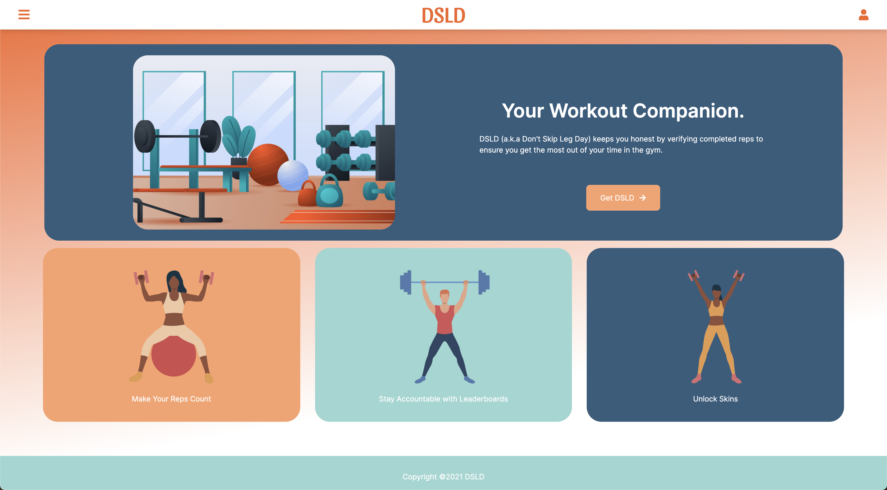

DSLD (Don’t Skip Leg Day) is a fitness companion that uses computer vision to provide feedback on squat form. DSLD uses the camera on your computer or phone to track your pose as you work out. Users can sign up for an account, build their profile, workout, and view their stats on their dashboard.
The inspiration for the app came from being stuck at home because of the current pandemic. Many of us have been unable to go to the gym so we wanted to create an app that could help users workout at home. There are other home workout solutions like Mirror which require people to spend $1500+ on expensive equipment so we wanted to create a more affordable option that allowed users to use the technology that they already own.
Our app uses the camera on the user’s computer or phone to track their pose as they work out, keeps track of reps and sets, and provides audio and visual feedback to help the user correct their form. After your workout, DSLD will provide you a summary of your workout as well as your overall accuracy. You can check your lifetime stats on the dashboard as well as your most workouts.

My team and I created and trained our model using Tensorflow’s PoseNet model and Teachable Machine. I was responsible for training the model, using the prediction probability to classify poses, rendering metrics on the user interface, and providing visual and audio form feedback. I also set up the Firestore collections and documents, and wrote functions to add and retrieve data from the database.